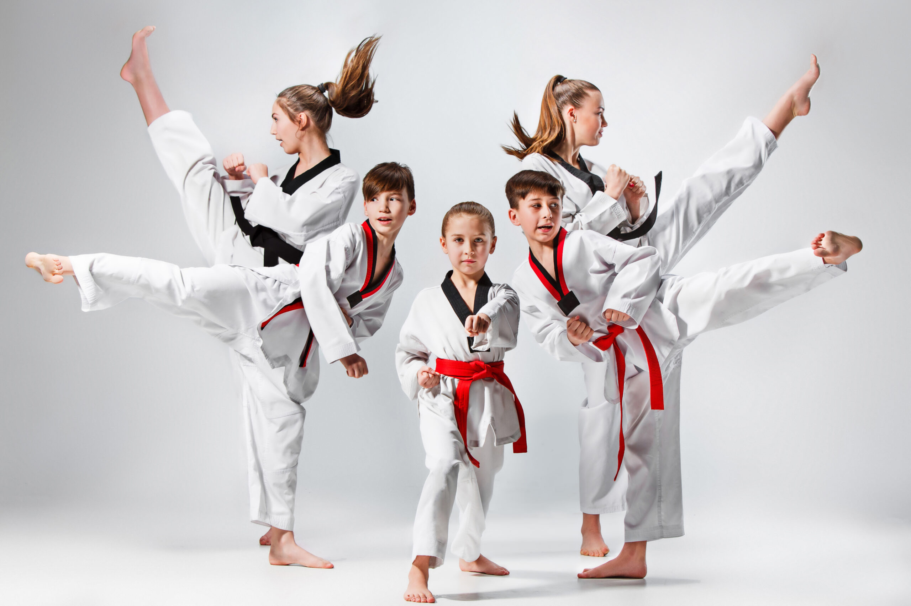
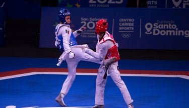

Historia del Taekwon-Do en el mundo
Videos
El taekwondo es un arte marcial y deporte olímpico que destaca por sus técnicas de patadas,
normalmente enfocadas al ataque al tronco o la cabeza.
Tae Kwon-Do Etimológicamente significa: Tae = Patada, Kwon = Puño, Do = Camino.
Definición
- Combates Los combates se dividen en tres rondas, mejor que rounds; en caso de empate se disputa el punto de oro, mejor que golden point, una cuarta ronda en la que quien haga el primer punto gana.
- Deportistas Para designar a la persona que practica este arte marcial se emplean taekwondoka, por analogía con otras formas como judoka o karateka; taekwondoin, más semejante a la forma en coreano, y taekwondista, que es la forma mayoritaria y preferible.
- Golpes Los términos con los que se alude a los diferentes golpes suelen emplearse en coreano, por lo que lo apropiado es escribirlos en cursiva o entrecomillados. Suelen formarse a partir de las formas chagui (‘patada’), jirugui (‘golpe de puño’), son (‘golpe con la mano abierta’)… Las posiciones se crean con la palabra sogui;así, junbi sogui es posición de saludo, sogui pyeongui, posición normal…
- Dan, en minúscula El sustantivo dan, que alude a cada uno de los diez grados superiores al cinturón negro, se escribe con minúscula. Si se especifica con cifras ordinales de qué dan se trata, lo adecuado es escribir punto antes de la letra volada: 10.º dan, mejor que 10 dan.


Historia del Taekwon-Do en el mundo
- Después de la ocupación coreana por Japón, el Sistema Educativo Japonés se impuso en las escuelas coreanas y se
enseñaron formas deportivas como de Judo y Kendo.
En 1909, Japón prohibió la práctica de las artes marciales en Corea, donde existían dos formas de lucha muy populares, el Sirum, lucha tradicional coreana similar a la lucha Canaria, con la que en tiempos recientes se han realizado algunos enfrentamientos amistosos, y al Tae Kyon que fue totalmente prohibido durante la ocupación por lo que el antiguo Subak y el más antiguo Tae Kyon, que es practicado en secreto por un grupo muy reducido de simpatizantes.
Choi, que seria el primer presidente de la Asociación Coreana de Taekwondo estudia caligrafía con Han Il Dong en 1930, y éste le introduce en el conocimiento del Tae Kyon.
Otro estudiante de las artes prohibidas fue Hwang Kee, el futuro fundador del Tang Soo Do. Kee conoce el Tae
Kyon y el Soo Bak.
En 1936 a la edad de 22 años efectúa un viaje a el Norte de China donde estudia el método de la escuela T'ang, trabaja hasta 1945 en la combinación de ambos estilos.
Hong Hi Choi, es enviado a Kyoto en 1937 para fomentar su educación, en donde conoce al señor Kim, un maestro coreano del que aprende Karate Shotocan durante dos años, hasta que obtiene su primer Dan, luego se dirigió a la Universidad de Tokio donde conseguirá el segundo Dan.
En 1943 Japón levanta la prohibición y el Kung fu, Judo y el Karate gozan de gran popularidad entre los coreanos.
Ello, hace que se desarrolle mucho el conocimiento del Karate,sobre todo el Shotokan, ya que muchos coreanos estuvieronresidiendo en Japón sobre todo los de clase alta, que podían recibir una educación más selecta.
Lo anterior produjo que cuando Corea recobra su independencia, las artes marciales japonesas eran muy populares mientras que las coreanas sólo eran conocidas por una minoría, y estimadas como de inferior categoría.